Teaching videos, made of clay and code.
Press the clay. Hold the button down to leave a dent.Scroll down.
It starts with one sentence.
Select the topic to change it.
Claude writes three files.
Select a page to read it. Select outside it to go back.
Whisper times every word.
Put the pointer on the wave to find each word.Each word gets its time in seconds.
Code draws every frame.
Put the pointer on the graph: a ghost cart shows where the cart was at that time.Scroll back, and it plays backwards.
Click anything, and he does one of his 12 moves.
Click or tap any object, and he walks there to use it.
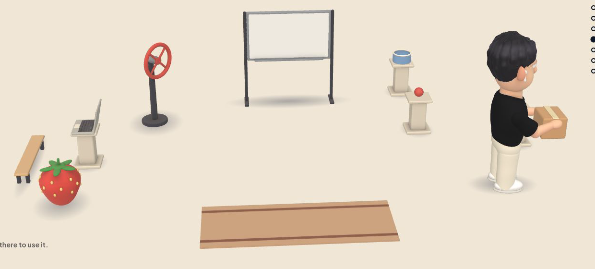
Nothing renders until the checks pass.
Scroll: he lies down, and the checks of the clay kit run on his pose.
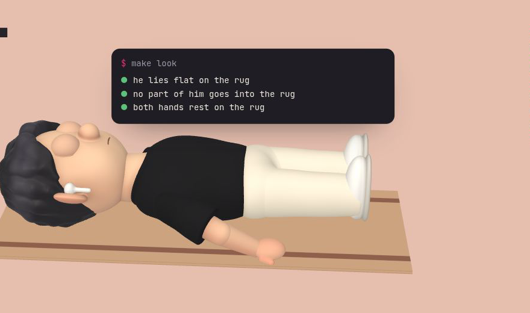
The result is a real MP4.
Select a frame to play it. Select outside it to go back.
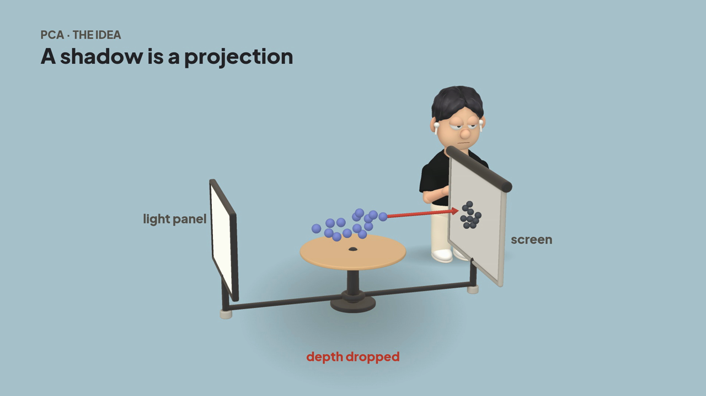
Install it with one command.
npx clayducationThen ask Claude Code for a video, in the conversation where the topic came up.
Manim, inside the clay videosNew
For a curve, a plot or a formula that changes step by step, the video changes to Manim and back.
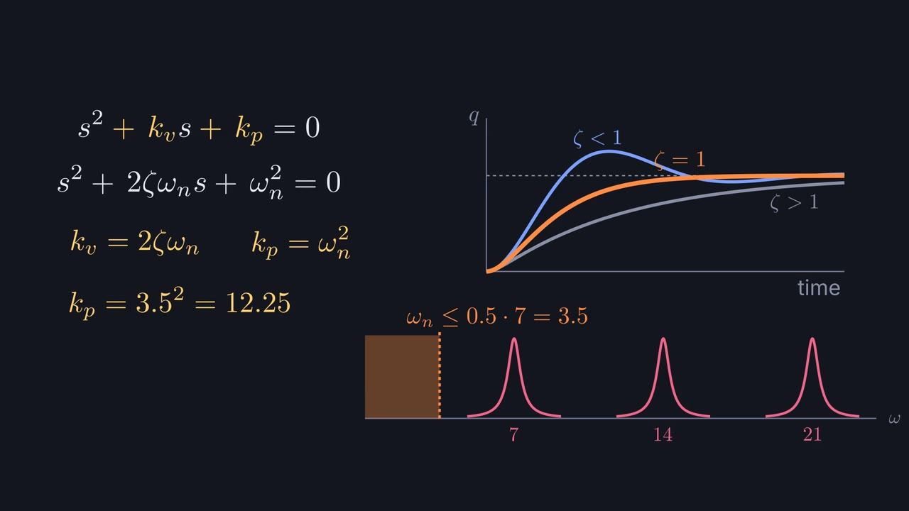
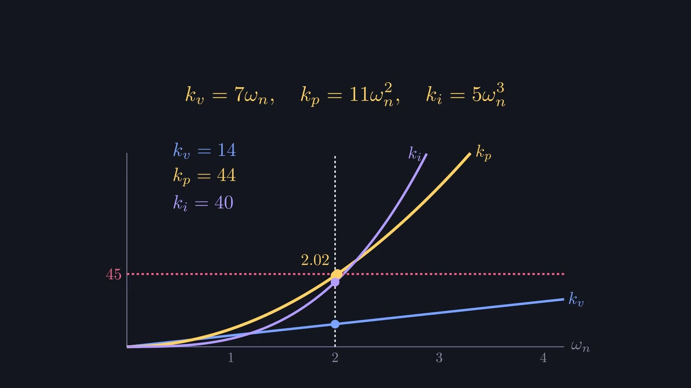
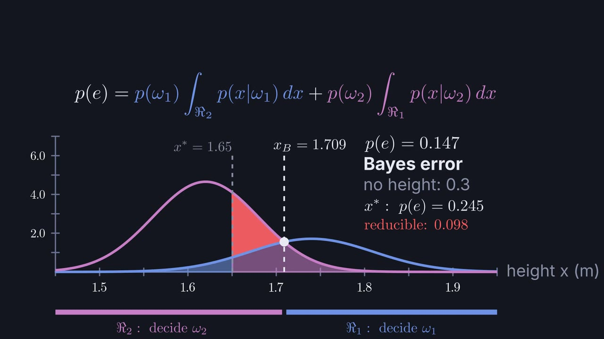
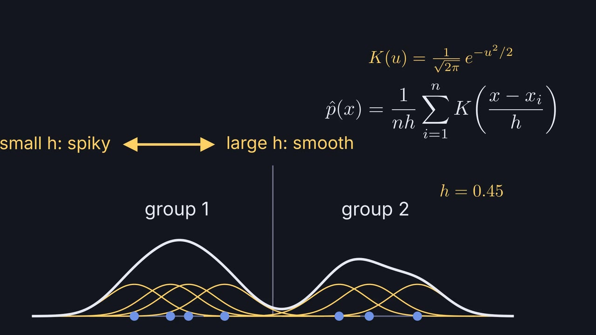
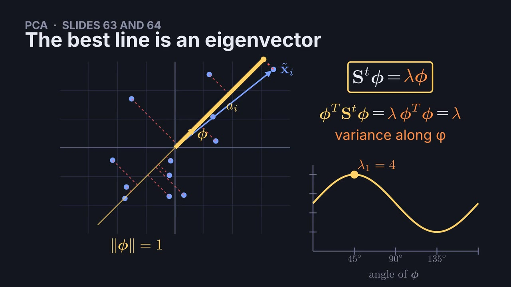
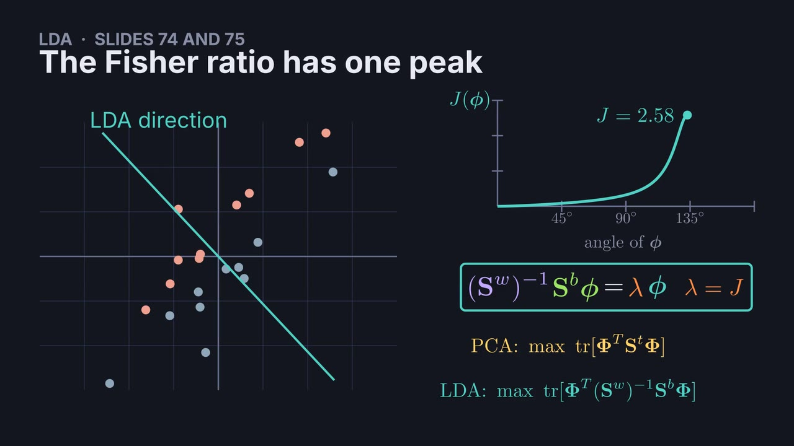
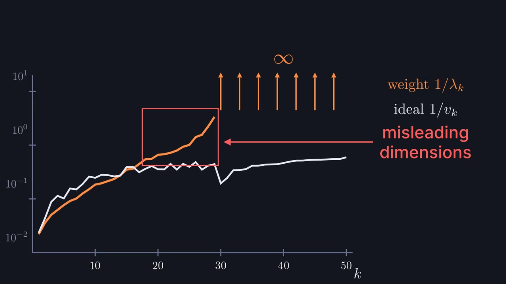
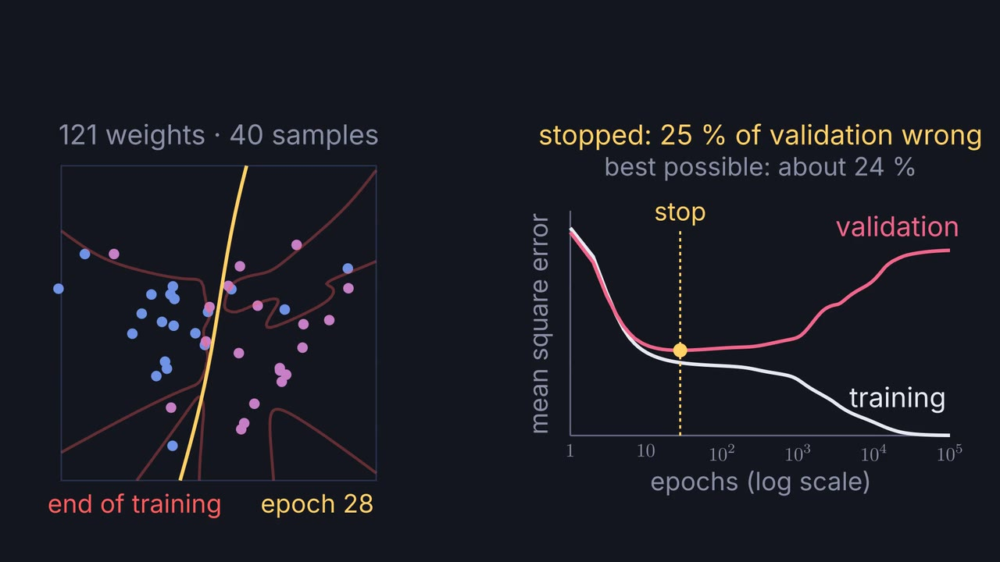
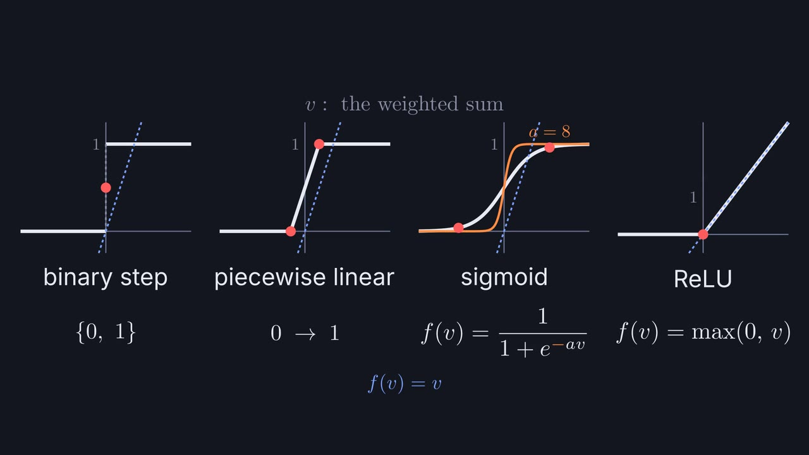
The older 2D styles
The first version of Clayducation drew in 29 flat styles, and they are still in the video engine. Ask for one by name, for example "tell its history as a newsreel".
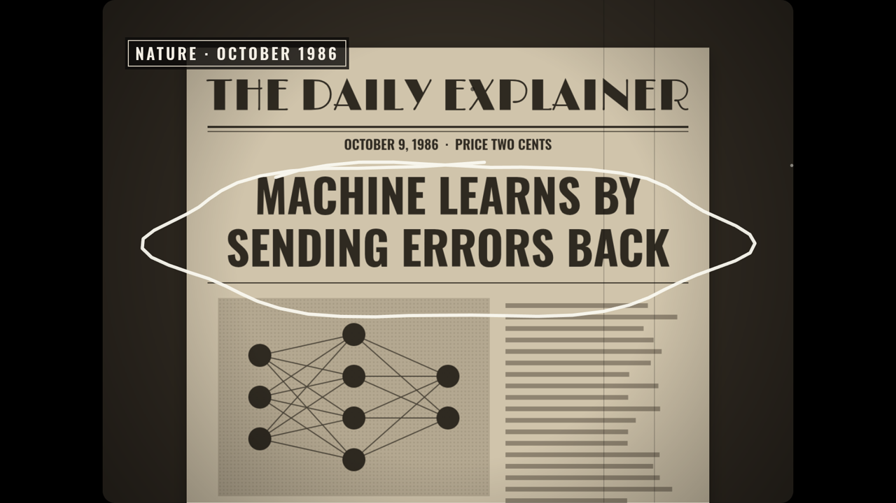
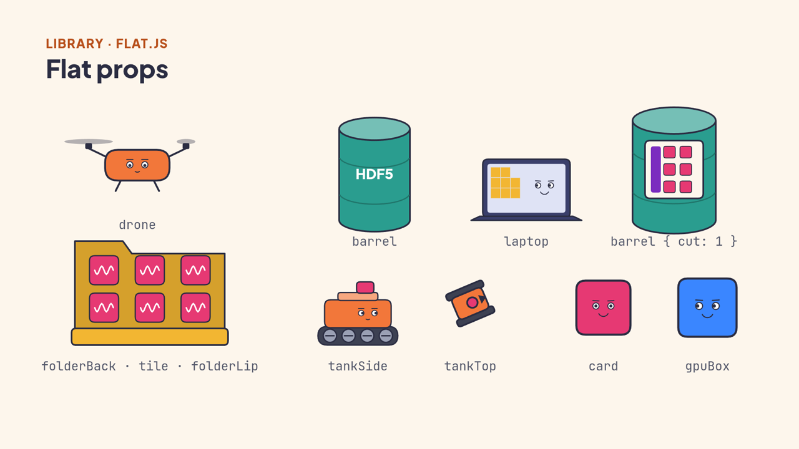
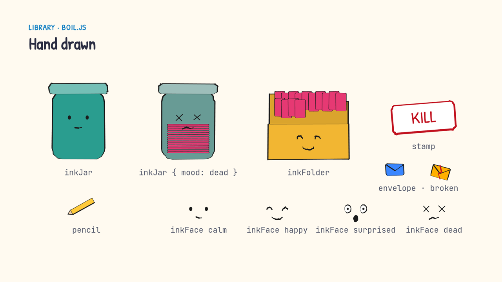
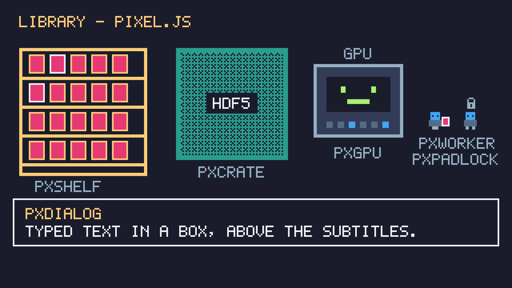
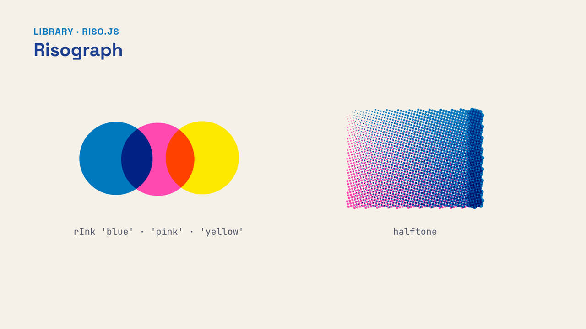
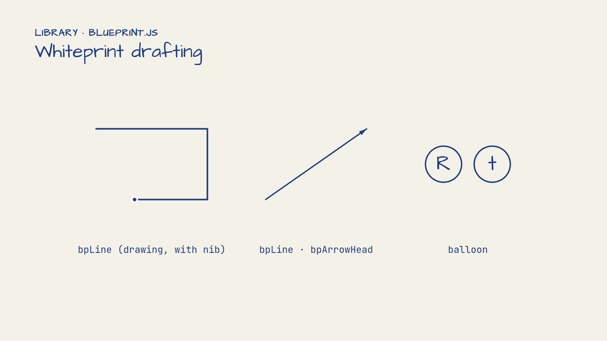